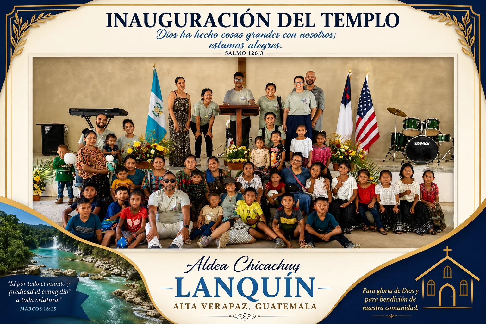

La Palabra para la vida diaria
Predicaciones y Podcast
Mensajes centrados en Cristo, estudios bíblicos y conversaciones que fortalecen la fe.

Canal oficial
La Biblia Nos Habla
Predicaciones, enseñanzas, testimonios y contenido pastoral con el Pastor Gilberto Maldonado.
Suscríbase al canal para recibir nuevos mensajes y compártalos con familiares y amigos.
Biblioteca de mensajes
Encuentre una enseñanza
Busque por título, texto bíblico o tema. Cada tarjeta le llevará a una búsqueda directa dentro de YouTube.
No encontramos un mensaje con ese término.
Podcast
La Biblia Nos Habla
Reflexiones bíblicas, conversaciones pastorales, música pentecostal y enseñanzas para toda la familia.
🎙️ Vida cristiana
📖 Estudios bíblicos
🎹 Música pentecostal
🙏 Testimonios
Escuchar y ver episodios
🎙️
La BibliaNos Habla Con el Pastor Gilberto Maldonado